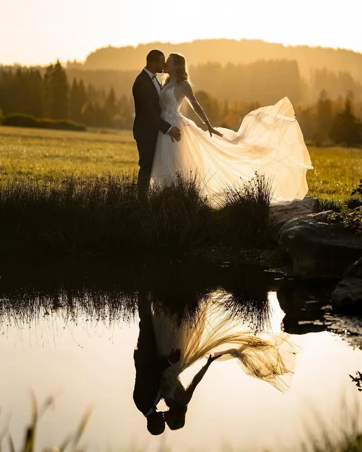
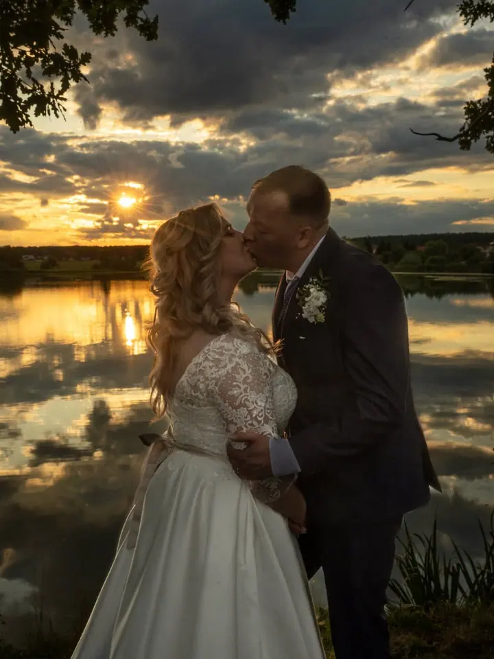
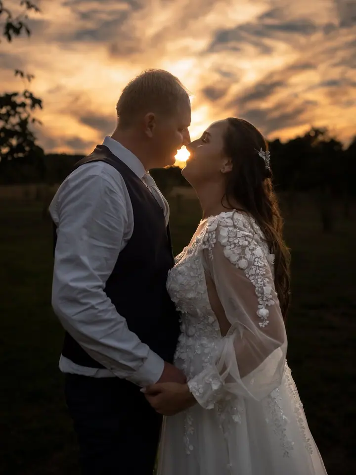
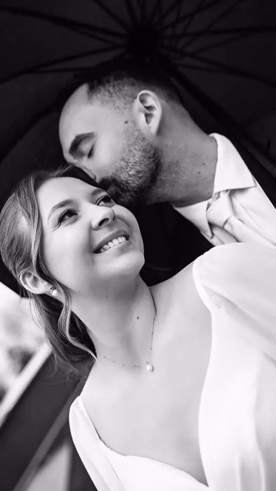

jedna
Svatební focení
Celý svatební den od příprav po večerní portréty s prskavkami. Fotím nenápadně, bez zbytečného pózování, a 20 fotek máte hned po svatbě.

Svatební fotograf ze Šumavy · Šumava, jižní a střední Čechy, Plzeňsko a Vysočina

Jmenuji se Zdeněk Kluibr a jsem svatební fotograf ze Šumavy. Na svatbě jsem spíš nenápadný pozorovatel a čekám na momenty, které mají skutečnou atmosféru. Kromě svateb rád fotím i páry, rodiny a portréty.
Více o mně
Co fotím
jedna
Celý svatební den od příprav po večerní portréty s prskavkami. Fotím nenápadně, bez zbytečného pózování, a 20 fotek máte hned po svatbě.
dvě
Hodinová procházka ve dvou, nejraději venku při západu slunce. Odevzdám všechny povedené fotky, 30 až 60 kusů v online galerii.
tři
Portrétní a těhotenské focení v přírodě, v klidu a pohodové atmosféře. Pro firmy a podnikatele nabízím i business focení.
Rodinné a dětské focení venku i vánoční focení nedaleko Vimperka. Připravil jsem tam dvě scény: světlý vánoční interiér a dřevěnou vánoční stodolu.
Nejhezčí momenty se nedají naaranžovat.

Za objektivem
Jsem Zdeněk a jsem svatební fotograf ze Šumavy. Sice se jmenuji Portréty na Šumavě, ale za focením rád vyrazím kamkoliv. Nejčastěji fotím na Šumavě, v jižních a středních Čechách, na Plzeňsku a Vysočině. Svatby fotím v Česku i v Itálii.
Miluji svatby, jejich atmosféru, emoce, smích, nervozitu i všechny malé okamžiky, které během dne vzniknou. Nesnažím se všechno řídit ani vytvářet situace, které se nestaly. Raději sleduji, co se kolem mě děje, aby se k vašim fotkám dalo vracet i po letech.
Zakládám si na přátelské komunikaci a pohodové atmosféře. Chci, abyste se se mnou cítili dobře a nemuseli přemýšlet nad tím, že vás někdo fotí. Právě tak podle mě vznikají přirozené a opravdové fotografie.
Zdeněk
Napište mi přes formulář, na e-mail nebo zavolejte. Domluvíme termín a já vám řeknu, jestli je volný.
Potkáme se, probereme, jak bude váš den vypadat, a poznáme se. Pokud chcete, přidáme i předsvatební focení.
Jsem s vámi až 12 hodin, od příprav přes obřad a portréty při západu slunce až po večerní fotky s prskavkami.
Prvních 20 fotek dostanete hned po svatbě. Všech 500 až 700 upravených fotografií vám pošlu v online galerii do 14 dní.
Portfolio
Otázky
Balíček all inclusive na celý den stojí 24 000 Kč a zahrnuje 12 hodin focení, předsvatební schůzku a 500 až 700 upravených fotografií. Předsvatební focení je za příplatek 3 000 Kč. Pokud chcete jen obřad, domluvíme menší balíček.
Prvních 20 fotek máte ihned po svatbě. Všechny fotografie odevzdávám v online galerii do 14 dní.
Ano, rád vyrazím kamkoliv, svatby fotím v Česku i v Itálii. Doprava do 100 km je v ceně.
Párové, těhotenské, rodinné, dětské i portrétní focení stojí 4 500 Kč za hodinu. Dostanete všechny povedené fotky, 30 až 60 kusů v online galerii.
Napište pár vět o tom, co si představujete. portretynasumave@gmail.com